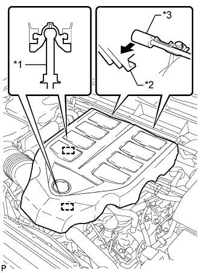

VACUUM SWITCHING VALVE (for ACIS) > ON-VEHICLE INSPECTION |
| 1. REMOVE V-BANK COVER SUB-ASSEMBLY |
|  |
Raise the front of the V-bank cover to detach the 2 pins. Then detach the 2 V-bank cover hooks from the No. 1 V-bank cover bracket and remove the V-bank cover.
| *1 | Pin |
| *2 | Hook |
| *3 | No. 1 V-bank Cover Bracket |
| 2. INSPECT VACUUM SWITCHING VALVE ASSEMBLY (for ACIS) |
Disconnect the vacuum switching valve connector.
Measure the resistance according to the value(s) in the table below.
| Tester Connection | Condition | Specified Condition |
| 1 - 2 | 20°C (68°F) | 37 to 44 Ω |
| 1 - Body ground | Always | 1 MΩ or higher |
| 2 - Body ground |
| *a | Body Ground |
Check the vacuum switching valve operation.
When applying a vacuum to port E, check that air is sucked into the filter.
| *1 | Filter |
| *a | Vacuum |
| *b | Air |
Apply voltage across the terminals.
| *a | Vacuum |
| *b | Air |
When applying a vacuum to port F, check that air is sucked into port E.
If the result is not as specified, replace the vacuum switching valve assembly.
Connect the vacuum switching valve connector.
| 3. INSTALL V-BANK COVER SUB-ASSEMBLY |
 |
Attach the 2 V-bank cover hooks to the No. 1 V-bank cover bracket. Then align the 2 V-bank cover grommets with the 2 pins and press down on the V-bank cover to attach the pins.
| *1 | Pin |
| *2 | Grommet |
| *3 | Hook |
| *4 | No. 1 V-bank Cover Bracket |